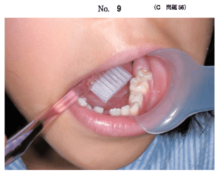

小児の歯周疾患
小児歯周疾患の特徴
- 小児では歯肉炎が主体（歯周炎は少ない）
- プラーク性歯肉炎が最も多い
- 歯の萌出・交換期に特有の歯周疾患がある
萌出性歯肉炎
歯の萌出過程で一時的に生じる歯肉炎。
好発部位
| 部位 | 理由 |
|---|---|
| 上顎前歯部 | 萌出中の幼若永久歯の周囲 |
| 上顎大臼歯部 | 第一・第二大臼歯萌出時 |
| 下顎大臼歯部 | 第一・第二大臼歯萌出時 |
萌出完了後に自然に消退することが多い
学童期の歯肉退縮
好発部位
- 下顎前歯部（最多）
原因
- 不適切なブラッシング（過度の圧、横磨き）
- 歯列不正（叢生）
- 付着歯肉の幅が狭い
小児の歯肉炎への対応
基本的な対応
- ブラッシング指導（最重要）
- 歯ブラシの選択（毛の硬さ、ヘッドサイズ）
- デンタルフロスの使用指導（隣接面清掃）
- PMTC（専門家による機械的清掃）
- 低年齢児：仕上げ磨きの実施
不要・不適切な対応
- 抗菌薬投与：プラーク性歯肉炎には不要
- 咬合調整：歯肉炎の原因ではない
- 歯間ブラシ：小児には不適（フロスを使用）
- 歯磨剤の使用中止：必要ない
過去問
114B77
萌出性歯肉炎の好発部位はどれか。3つ選べ。
a 上顎前歯部
b 上顎小臼歯部
c 下顎小臼歯部
d 上顎大臼歯部
e 下顎大臼歯部
b 上顎小臼歯部
c 下顎小臼歯部
d 上顎大臼歯部
e 下顎大臼歯部
正解：a, d, e
【解説】萌出性歯肉炎は上顎前歯部、上顎大臼歯部、下顎大臼歯部に好発。小臼歯部は萌出が比較的スムーズで萌出性歯肉炎になりにくい。
115C55
学童期における歯肉退縮の好発部位はどれか。1つ選べ。
a 上顎前歯部
b 下顎前歯部
c 上顎犬歯部
d 上顎臼歯部
e 下顎臼歯部
b 下顎前歯部
c 上顎犬歯部
d 上顎臼歯部
e 下顎臼歯部
正解：b
【解説】学童期の歯肉退縮は下顎前歯部に好発。下顎前歯は叢生になりやすく、ブラッシング圧がかかりやすいため。
112C56
7歳の女児。ブラッシング時の歯肉からの出血を主訴として保護者とともに来院した。上下顎前歯部歯肉に発赤と腫脹がみられ、全顎にわたって歯頸部にプラークの付着が認められた。患者自身によるブラッシング時の写真（別冊No.9）を別に示す。医療面接結果の一部を表に示す。適切な指導はどれか。2つ選べ。

a 歯ブラシの選択
b 仕上げ磨きの実施
c 歯磨剤の使用中止
d ブラッシング回数の増加
e 歯間ブラシによる歯間部清掃
b 仕上げ磨きの実施
c 歯磨剤の使用中止
d ブラッシング回数の増加
e 歯間ブラシによる歯間部清掃
正解：a, b
【解説】7歳児のプラーク性歯肉炎には歯ブラシの選択（適切なサイズ・硬さ）と仕上げ磨きの実施が有効。歯間ブラシは小児には不適（フロス使用）。回数より質が重要。
114C49
13歳の女子。下顎前歯部のブラッシング時の出血を主訴として来院した。プロービング深さは全周3mm以下であった。初診時の口腔内写真（別冊No.18）を別に示す。適切な対応はどれか。3つ選べ。

a PMTC
b 咬合調整
c 抗菌薬投与
d ブラッシング指導
e デンタルフロス使用の指導
b 咬合調整
c 抗菌薬投与
d ブラッシング指導
e デンタルフロス使用の指導
正解：a, d, e
【解説】プロービング深さ3mm以下の歯肉炎にはPMTC、ブラッシング指導、デンタルフロス使用の指導が適切。咬合調整や抗菌薬はプラーク性歯肉炎には不要。